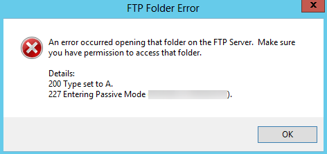
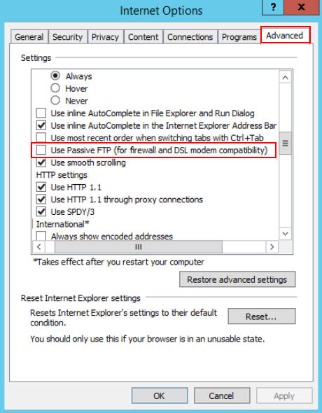

Symptom
An error occurs when you open a folder on an FTP server. The system displays a message asking you to check permissions.
Figure 1 FTP Folder Error

Possible Causes
The FTP firewall configured for the browser does not allow you to open the folder.
Solution
The following uses Internet Explorer as an example.
- Open the Internet Explorer and choose Tools > Internet options.
- Click the Advanced tab.
- Deselect Use Passive FTP (for firewall and DSL modem compatibility).
Figure 2 Internet Options

- Click OK, restart Internet Explorer, and open the folder on the FTP server again.